Specimen of the graphics that require 2 input variables and that, up to now, are being considered by the brinton’s longplot() and brinton::plotup() functions.
2 numeric
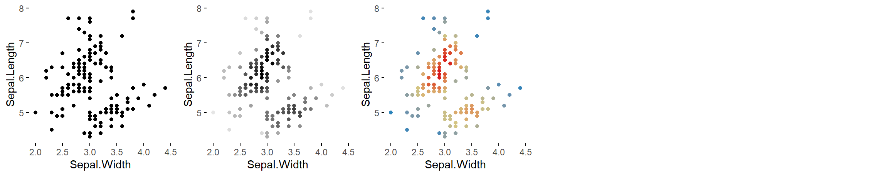
2 numeric = c('scatter plot', 'bw scatter plot', 'color scatter plot')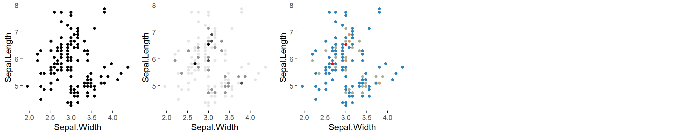
2 numeric = c('binned scatter plot', 'bw binned scatter plot', 'color binned scatter plot')
2 numeric = c('binned heatmap', 'bw binned heatmap', 'color binned heatmap')
2 numeric = c('hexagonal binned heatmap', 'bw hexagonal binned heatmap', 'color hexagonal binned heatmap')
2 numeric = c('blank', 'bw heatmap', 'color heatmap')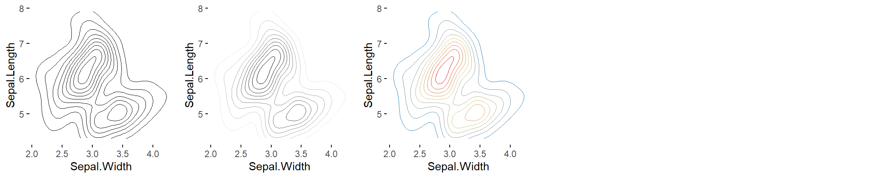
2 numeric = c('contour plot', 'bw contour plot', 'color contour plot')
2 numeric = c('contour plot with data points', 'bw contour plot with data points', 'color contour plot with data points')
2 numeric = c('parallel plot', 'bw parallel plot', 'color parallel plot')
2 numeric = c('unscaled parallel plot', 'unscaled bw parallel plot', 'unscaled color parallel plot')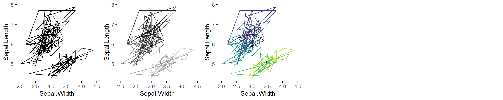
2 numeric = c('path graph', 'bw path graph', 'color path graph')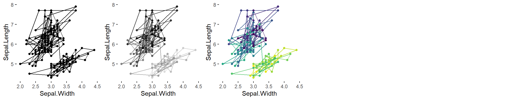
2 numeric = c('point-to-point graph', 'bw point-to-point graph', 'color point-to-point graph')
2 numeric = c('point graph', 'bw point graph', 'color point graph')
2 numeric = c('line graph', 'stepped line graph')
2 numeric = c('area graph')
2 numeric = c('stepped area graph', 'bw stepped area graph', 'color stepped area graph')
2 numeric = c('blank', 'bw heatmap', 'color heatmap')
2 numeric = c('blank', 'bw seq. stripe graph', 'color seq. stripe graph')
2 numeric = c('histogram', 'bw histogram', 'color histogram')
2 numeric = c('freq. polygon'))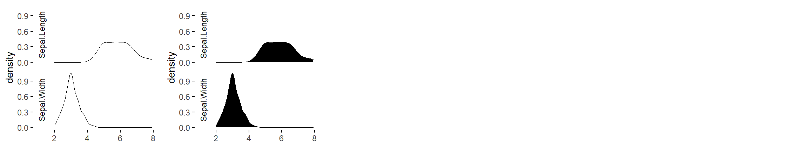
2 numeric = c('density plot', 'filled density plot')
2 numeric = c('violin plot', 'filled violin plot')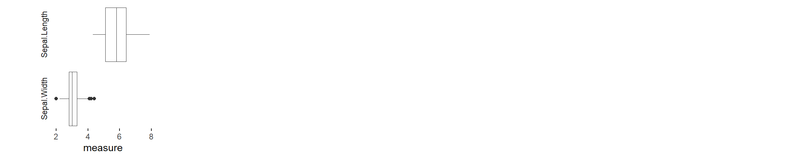
2 numeric = c('box plot'))
2 numeric = c('ecdf plot', 'point ecdf plot', 'stepped ecdf plot')2 datetime
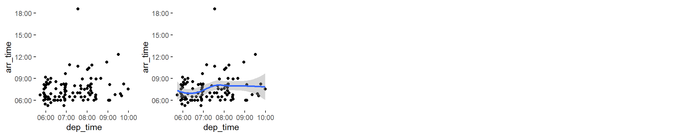
2 datetime = c('scatter plot', 'scatter plot with trend line')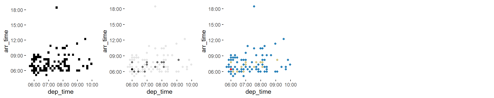
2 datetime = c('binned scatter plot', 'bw binned scatter plot', 'color binned scatter plot')2 datetime = c('blank', 'bw heatmap', 'color heatmap')
2 datetime = c('contour plot with data points')
2 datetime = c('path graph', 'bw path graph', 'color path graph')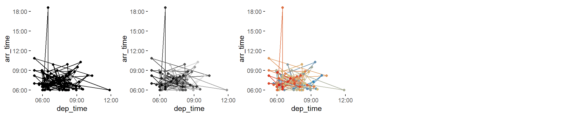
2 datetime = c('point-to-point graph', 'bw point-to-point graph', 'color point-to-point graph')numeric~datetime
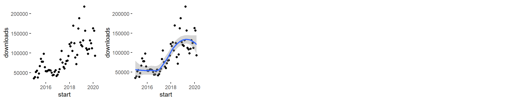
numeric~datetime = c('scatter plot', 'scatter plot with trend line')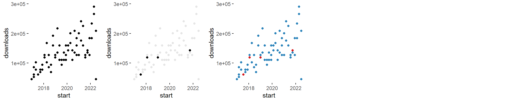
numeric~datetime = c('binned scatter plot', 'bw binned scatter plot', 'color binned scatter plot')numeric~datetime = c('blank', 'bw heatmap', 'color heatmap')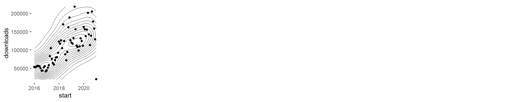
numeric~datetime = c('contour plot with data points')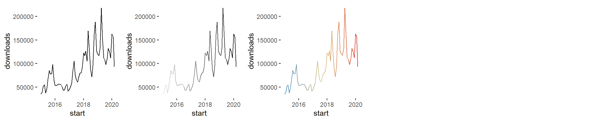
numeric~datetime = c('path graph', 'bw path graph', 'color path graph')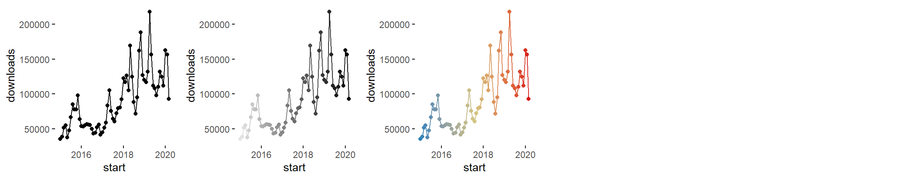
numeric~datetime = c('point-to-point graph', 'bw point-to-point graph', 'color point-to-point graph')numeric~factor

numeric~factor = c('path graph', 'point graph', 'tile plot')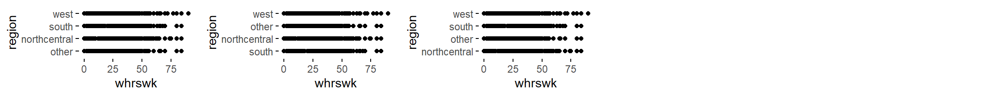
numeric~factor = c('binned heatmap', 'bw binned heatmap', 'color binned heatmap')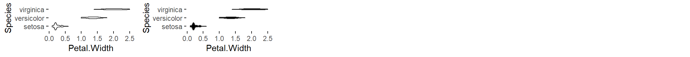
numeric~factor = c('violin plot', 'filled violin plot')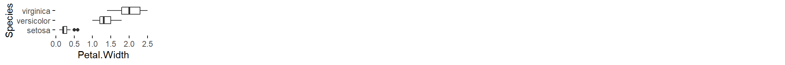
numeric~factor = c('box plot')numeric~factor = c('blank', 'bw stacked histogram', 'color stacked histogram')
numeric~factor = c('blank', 'bw 100% stacked histogram', 'color 100% stacked histogram')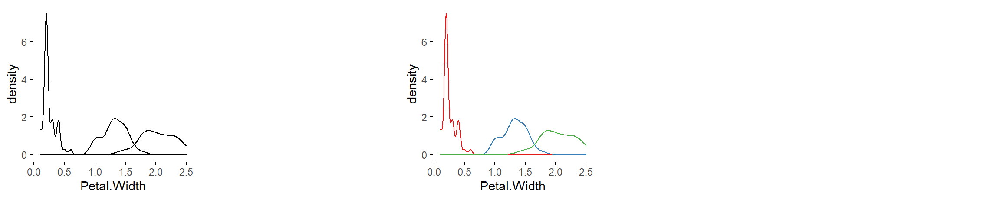
numeric~factor = c('density plot', 'blank', 'color density plot')
numeric~factor = c('blank', 'filled density plot', 'color filled density plot')